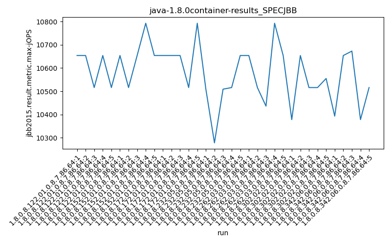
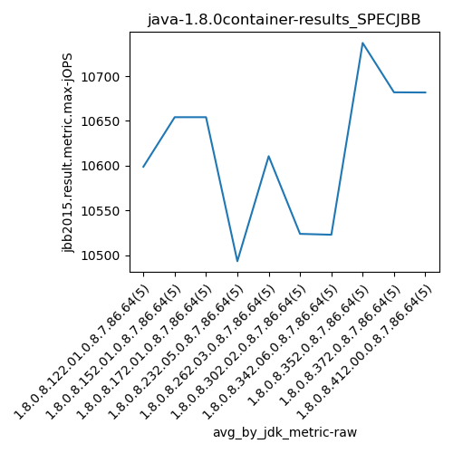
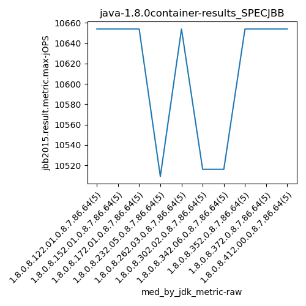
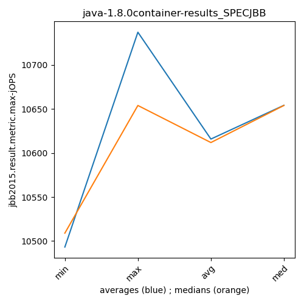
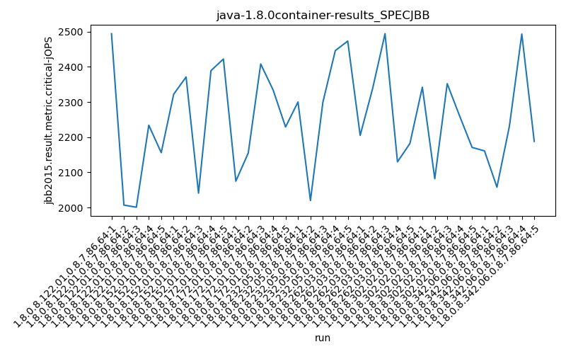
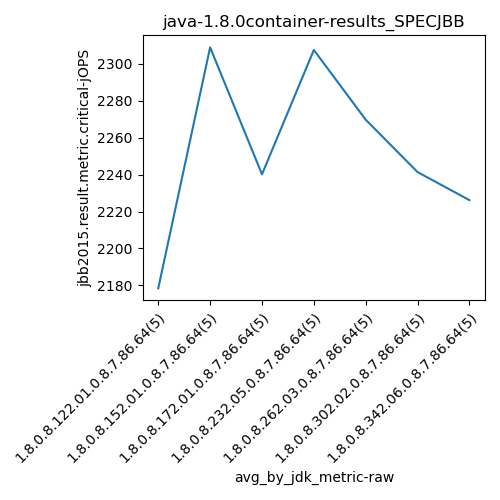
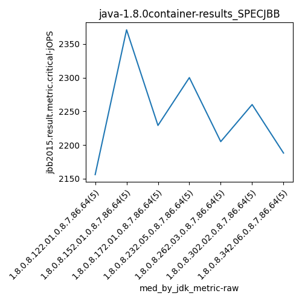
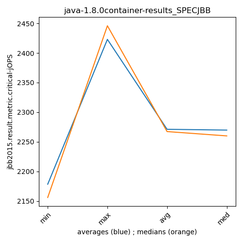

java-1.8.0 SPECJBB
Context at bottom
/home/jvanek/git/benchmarks-in-nested-virtualisation-toolchain/final_results/container_results/container-results_J2DBENCH
java-1.8.0
SPECJBB
/home/jvanek/git/benchmarks-in-nested-virtualisation-toolchain/final_results/container_results/container-results_RADARGUNs3
java-1.8.0
SPECJBB
/home/jvanek/git/benchmarks-in-nested-virtualisation-toolchain/final_results/container_results/container-results_RADARGUNs1
java-1.8.0
SPECJBB
/home/jvanek/git/benchmarks-in-nested-virtualisation-toolchain/final_results/container_results/container-results_DACAPO
java-1.8.0
SPECJBB
/home/jvanek/git/benchmarks-in-nested-virtualisation-toolchain/final_results/container_results/container-results_SPECJBB
java-1.8.0
SPECJBB
container-results_SPECJBB
- container-results_SPECJBB - max-jops
- container-results_SPECJBB - critical jops
container-results_SPECJBB - max-jops
Expected number of java-1.8.0 JDKs: 10
1st avgmed_alljdks_metric:
/home/jvanek/git/benchmarks-in-nested-virtualisation-toolchain/final_results/result_processing.py /home/jvanek/git/benchmarks-in-nested-virtualisation-toolchain/final_results/container_results/container-results_SPECJBB jbb2015.result.metric.max-jOPS False
values: [10654, 10654, 10516, 10654, 10516, 10654, 10516, 10654, 10793, 10654, 10654, 10654, 10654, 10516, 10793, 10509, 10278, 10509, 10516, 10654, 10654, 10516, 10436, 10793, 10654, 10378, 10654, 10516, 10516, 10555, 10393, 10654, 10673, 10378, 10516, 10793, 10931, 10654, 10654, 10654, 10516, 10793, 10654, 10654, 10793, 10654, 10654, 10654, 10654, 10793]

Expected number of iterations: 5
final number of values: 50 out of 50
Pass rate: 100.0%
values: (10278, 10931, 10615.86, 10654)

** accuracy from all jdks and runs
more is better
MIN: 10278
MAX: 10931
AVG: 10615.86
MED: 10654
Relative differences 1:
MIN-MAX: 6.0 %
MIN-AVG: 3.0 %
MIN-MED: 4.0 %
MAX-MIN: -6.0 %
MAX-AVG: -3.0 %
MAX-MED: -3.0 %
AVG-MED: 0.0 %
stored to java-1.8.0.properties. sort | uniq that!
2nd avgmed_by_jdk_metric:
values: [10598.8, 10654.2, 10654.2, 10493.2, 10610.6, 10523.8, 10522.8, 10737.2, 10682.0, 10681.8]

values: [10654, 10654, 10654, 10509, 10654, 10516, 10516, 10654, 10654, 10654]

values: (10493.2, 10737.2, 10615.86, 10654.2)
values: (10509, 10654, 10611.9, 10654)

** accuracy from all jdks where runs were avged
more is better
MIN: 10493.2
MAX: 10737.2
AVG: 10615.86
MED: 10654.2
Relative differences 1:
MIN-MAX: 2.0 %
MIN-AVG: 1.0 %
MIN-MED: 2.0 %
MAX-MIN: -2.0 %
MAX-AVG: -1.0 %
MAX-MED: -1.0 %
AVG-MED: 0.0 %
stored to java-1.8.0.properties. sort | uniq that!
** accuracy from all jdks where runs were medianed
more is better
MIN: 10509
MAX: 10654
AVG: 10611.9
MED: 10654
Relative differences 1:
MIN-MAX: 1.0 %
MIN-AVG: 1.0 %
MIN-MED: 1.0 %
MAX-MIN: -1.0 %
MAX-AVG: -0.0 %
MAX-MED: -0.0 %
AVG-MED: 0.0 %
stored to java-1.8.0.properties. sort | uniq that!
container-results_SPECJBB - critical jops
Expected number of java-1.8.0 JDKs: 10
1st avgmed_alljdks_metric:
/home/jvanek/git/benchmarks-in-nested-virtualisation-toolchain/final_results/result_processing.py /home/jvanek/git/benchmarks-in-nested-virtualisation-toolchain/final_results/container_results/container-results_SPECJBB jbb2015.result.metric.critical-jOPS False
values: [2494, 2007, 2001, 2234, 2156, 2322, 2371, 2041, 2389, 2422, 2075, 2155, 2408, 2334, 2229, 2300, 2020, 2299, 2446, 2473, 2205, 2338, 2494, 2130, 2182, 2342, 2082, 2352, 2260, 2171, 2161, 2058, 2231, 2493, 2188, 2205, 2479, 2233, 2042, 2088, 2451, 2198, 2313, 2446, 2124, 2338, 2498, 2495, 2446, 2338]

Expected number of iterations: 5
final number of values: 50 out of 50
Pass rate: 100.0%
values: (2001, 2498, 2271.14, 2299)

** accuracy from all jdks and runs
more is better
MIN: 2001
MAX: 2498
AVG: 2271.14
MED: 2299
Relative differences 1:
MIN-MAX: 20.0 %
MIN-AVG: 12.0 %
MIN-MED: 13.0 %
MAX-MIN: -25.0 %
MAX-AVG: -10.0 %
MAX-MED: -9.0 %
AVG-MED: 1.0 %
stored to java-1.8.0.properties. sort | uniq that!
2nd avgmed_by_jdk_metric:
values: [2178.4, 2309.0, 2240.2, 2307.6, 2269.8, 2241.4, 2226.2, 2209.4, 2306.4, 2423.0]

values: [2156, 2371, 2229, 2300, 2205, 2260, 2188, 2205, 2313, 2446]

values: (2178.4, 2423.0, 2271.1400000000003, 2269.8)
values: (2156, 2446, 2267.3, 2260)

** accuracy from all jdks where runs were avged
more is better
MIN: 2178.4
MAX: 2423.0
AVG: 2271.1400000000003
MED: 2269.8
Relative differences 1:
MIN-MAX: 10.0 %
MIN-AVG: 4.0 %
MIN-MED: 4.0 %
MAX-MIN: -11.0 %
MAX-AVG: -7.0 %
MAX-MED: -7.0 %
AVG-MED: -0.0 %
stored to java-1.8.0.properties. sort | uniq that!
** accuracy from all jdks where runs were medianed
more is better
MIN: 2156
MAX: 2446
AVG: 2267.3
MED: 2260
Relative differences 1:
MIN-MAX: 12.0 %
MIN-AVG: 5.0 %
MIN-MED: 5.0 %
MAX-MIN: -13.0 %
MAX-AVG: -8.0 %
MAX-MED: -8.0 %
AVG-MED: -0.0 %
stored to java-1.8.0.properties. sort | uniq that!
/home/jvanek/git/benchmarks-in-nested-virtualisation-toolchain/final_results/container_results/container-results_JMH
java-1.8.0
SPECJBB
pass rates:
container-results_SPECJBB=100.0%
Context:
- container_results
- SPECJBB